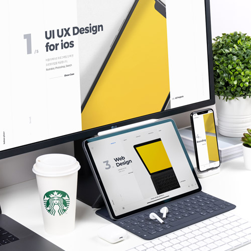
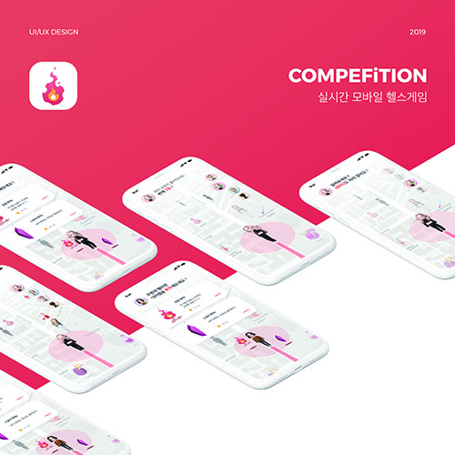

Web Design Studio Cheda Design
2017년도 부터 학생 프리랜서로 활동하며 만들게 된 나만의 브랜드 채다디자인(Cheda Design). 본명에서 '채'를 따고, Money의 의미를 지닌 Chedda에 기초하 여 네이밍 하게 되었다.미니멀 스타일의 로고와 강렬 한 yellow 컬러의 톤 앤 매너를 가진다.

Interactive Media COMPEFiTTION
위치기반 내가 사는 곳 주변 코스를 선택하고, 실시간 으로 측정되는 걸음수 데이터, 나를 따라 움직이는 귀 여운 아바타와 함께 운동을 시작해보자.
친구들은 물론 주변 지인들과 함께 지도에 떨어진 획기 적인 아이템을 사용해 경쟁 또는 협력하며 코스를 완주 해보는 것은 어떨까?
기존에 없던 실용어플과 게임어플 중간 성격의 UI/UX 를 위하여, 수많은 실패와 시도 끝에 탄생한 어플리케 이션 컴페핏션을 소개한다.

Mulimedia Design PETTOPIA
펫토피아는 APP과 연동하여 운영되는 신개념 유기보 호시설이다. 기존의 보호소는 위생·건강·시공간 제 약에 따른 재파양 문제 등 수많은 문제점을 안고있다. 우리는 이러한 문제점을 파악하여 유기견과 많은 시간 을 함께 보낼 수 있는 ‘시니어’들과 유기견을 매칭, 공 간을 쉐어하여 하나의 문화시설로 작용. 시니어와 유 기견 모두의 인식 개선에 이바지하길 바라며 펫토피아 를 기획하게 되었다.